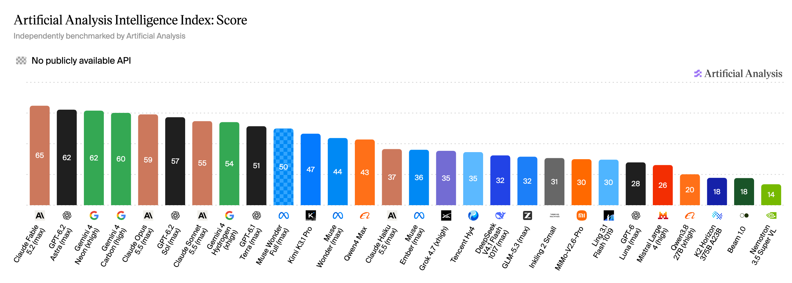
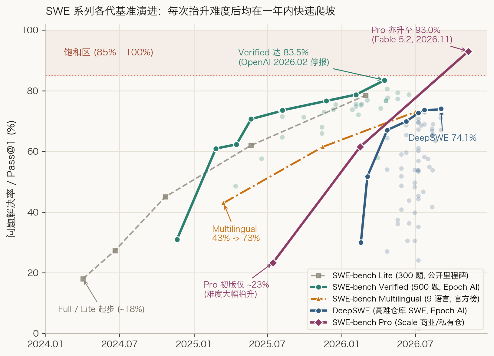
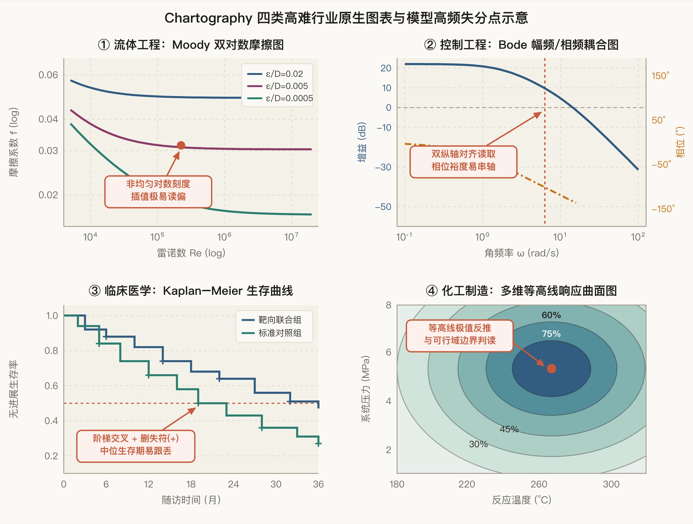

On October 27, 2026, Artificial Analysis replaced three sub-benchmarks inside its composite index. Without changing a single weight of any evaluated model, leaderboard rankings split sharply within 24 hours. This survey examines how frontier AI evaluation evolved across 2026: why legacy static benchmarks saturated and lost signal, where OpenAI and Anthropic redirected their release tables, how 10 representative benchmarks operate from code repositories to the physical world, what independent construction statistics across 16 frontier benchmarks reveal about building durable evaluations, and how evaluation environments co-evolve with models and harnesses under Benchmark RSI.
1. Legacy Saturation and New Evaluation Properties
1.1 The AA v5.0 Overnight Leaderboard Split
Between October 26 and October 27, 2026, Artificial Analysis upgraded its Intelligence Index from v4.3.2 to v5.0. The four top-level domain weights (office and knowledge work, coding, scientific reasoning, and general knowledge) stayed fixed at 25% each, and the exact same model checkpoints were evaluated on both days.
Within 24 hours, rankings diverged noticeably. GPT-6 Astra gained 4 points, while Claude Opus 5.5 and Gemini 4 Carbon held steady between 50 and 58. Leading Chinese models dropped 9 to 13 points overnight (Kimi K3.1 Pro fell from 55 to 46; DeepSeek V4.1 Flash and GLM-5.3 both fell from 45 to 32), widening the gap to the leader from 12 points to 26 points.1[1]Qwen4 Max, released on November 16, 2026, scored 43 on AA v5.0.2 (second among Chinese models), but was not part of the October 26–27 paired evaluation. Figure 1.1 restricts comparison strictly to the 6 checkpoints tested across both days; see Figure 1.2 for the full current leaderboard.
Fig. 1.1: AA Intelligence Index Overnight Upgrade
Oct 26 (v4.3.2) vs. Oct 27 (v5.0) across the 6 checkpoints evaluated on both days; top-level weights unchanged, only 3 private and long-horizon sub-benchmarks swapped
Fig. 1.2: Artificial Analysis Intelligence Index v5.0.2 Official Leaderboard
Official composite ranking as of 2026-11-26: top 10 spots are held by US closed-source models (50–65), while leading Chinese models cluster between 32 and 47

Image source: Artificial Analysis Intelligence Index v5.0.2 (2026-11-26). Claude Fable 5.2 leads (65), followed by GPT-6.2 Astra (62) and Gemini 4 Neon (62); top Chinese models are Kimi K3.1 Pro (47) and Qwen4 Max (43).
The cause becomes clear when inspecting the swapped sub-benchmarks. Version 5.0 retired saturated or dated suites—GDPval-AA v2.1, SciCode, original HLE, and AA-LCR v1.1—and introduced private pull-request review (FrontierCode 2.0), containerized scientific computing (TB-Science 0.1), and the cleaned HLE-Diamond set. After the upgrade, roughly 60% of composite weight shifted onto private holdouts, and median output length per task rose from 35k to 59k tokens.
1.2 Post-Saturation Priorities at OpenAI and Anthropic
The overnight index revision reflects two converging shifts: legacy static benchmarks have largely reached ceiling performance, and real-world deployment has moved far beyond single-turn question answering.
Longitudinal tracking by Epoch AI (Fig. 1.3, left) illustrates how quickly static benchmarks saturate across six capabilities: MMLU (88.1%), AIME (100%), GPQA Diamond (96.8%), SWE-bench Verified (83.5%; self-reported up to 87.6%), Terminal-Bench 2.0 (rising from 32.6% to 84.7% in 10 months), and ARC-AGI-2 (95.8%) all approached saturation within one to two years. Surveying 60 public benchmarks, Akhtar et al. (ICML 2026) found that on nearly half of active leaderboards, the score gap between top models is now smaller than run-to-run variance for a single model (0.3–1.5 points).
Once models push into the upper tail of a benchmark, item and grading defects dominate the remaining errors. When OpenAI retired SWE-bench Verified in February 2026, an audit of 138 unsolved tasks found that 59.4% suffered from defective tests. FutureHouse reviewed 321 text-only biology and chemistry items in original HLE against peer-reviewed literature and found 29% +/- 3.7% had incorrect ground-truth keys; Epoch AI flagged 42% errata in FrontierMath v1. When a third to half of remaining failures stem from flawed tasks, decimal-point leaderboard differences lose diagnostic value.
Starting in mid-to-late 2026, frontier laboratories visibly restructured their flagship release tables around new capabilities:
Anthropic focuses on long-horizon autonomy, commercial delivery, and safety boundaries. In its SEC Form S-1 filing, Anthropic organizes user interaction into three phases (Fig. 1.3, right): from short-turn Chatbots and single-app Copilots to Virtual Collaborators capable of running autonomously for 38 minutes to reconcile 14,302 transactions, draft MD&A narratives, and compile a 12-page CFO deck. On the November 2026 Claude Fable 5.2 release table, 8 of 14 benchmarks were newly released in 2026, 2 were built internally, and zero traditional multiple-choice tests remained—putting weight on 20-hour open-ended software engineering (FrontierSWE v2), real paid freelance work (RLI), 1.6-hour desktop workflows (OSWorld 2.1), 24-hour protein binder design, and cyber redlines (ExploitBench).
OpenAI retired noisy legacy tables in favor of real science, professional software, and cost efficiency. After dropping SWE-bench Verified in February 2026, OpenAI centered its GPT-6.2 Astra and Sol release on private PR quality (FrontierCode 2.0), containerized science (TB-Science 0.1), unpublished wet-lab troubleshooting (BioBasicsBench), 44-occupation blind evaluation (GDPval v2), and 55-occupation desktop software sandboxes (ALE v1.1), presenting the lightweight Sol tier alongside Astra to foreground cost-efficiency trade-offs.
Google DeepMind explicitly surfaces harness variance and anti-cheating adjustments. The November 2026 Gemini 4 Neon release matched the new benchmark core while disclosing a 3x solve-rate gap between its native Antigravity harness and third-party Mini-SWE on identical weights, and became the first lab to publish cheating-adjusted accuracy on Terminal-Bench 4.1.
Figure 1.4 compares the November 2026 flagship release tables across all three labs. Their hard intersection now converges on FrontierCode 2.0, TB-Science 0.1, HLE-Diamond, AutomationBench, and cybersecurity or behavioral audits. By contrast, most Chinese flagship releases over the same period remained anchored to SWE-bench Pro, Terminal-Bench 2.1, and original HLE, trailing the evaluation shift by roughly one quarter.
Fig. 1.3: Six-Domain Benchmark Saturation and Anthropic S-1 Workflow Evolution
Left: Epoch AI frontier curves reaching saturation within 1–2 years. Right: Anthropic SEC Form S-1 illustration of autonomous multi-system collaboration
Left: MMLU, AIME, GPQA Diamond, ARC-AGI-2, SWE-bench Verified, and TB 2.0 all entered the 80%–100% saturation band within 1–2 years.
Right: Anthropic S-1 figure illustrating a 38-minute autonomous run reconciling 14,302 transactions, drafting MD&A, and producing a 12-page CFO brief.
Fig. 1.4: November 2026 Frontier Lab Release-Table Convergence
Compiled from primary release pages for Claude Fable 5.2, GPT-6.2, and Gemini 4 Neon; red rows denote benchmarks promoted by all three labs
1.3 Four Defining Properties of Next-Gen Benchmarks
Reading the 2026 lab release tables alongside third-party indexes points to four structural departures from static benchmark suites:
Longer horizons, often without a reference solution. Task duration has expanded from seconds of single-turn QA and minutes of bug patching to 1.6-hour desktop workflows, 20-hour systems engineering, and 24-hour protein design. In performance optimization and scientific discovery, even human experts lack a canonical patch, so grading must rely on deterministic measurement or physical experiment.
Underspecified prompts over messy, realistic context. Instead of listing target files, edge cases, and output schemas upfront, prompts supply brief colloquial bug reports, corporate drives holding tens of thousands of Slack messages and conflicting policies, uncropped lab bench photos, or pre-corrupted virtual machines—testing whether an agent can infer implicit constraints and bound its edits.
Expansion from code repositories to science, office work, desktop GUIs, and physical control. Isolation containers and final-state verifiers matured first in code repositories where compilation and testing are cheap, then generalized outward to computational and wet-lab science, multi-SaaS office workflows, paid freelance labor, desktop GUI execution, and bimanual robotic control.
Evaluation measures a complete system rather than weights alone. The abstraction has shifted from Prompt -> Model -> Score to Model x Harness x Environment -> Score. Google's Gemini 4 Neon release (Nov 18, 2026) gave a clean controlled comparison: on SWE-sweep, the identical Neon checkpoint solved 12.8% under Mini-SWE versus 39.0% under native Antigravity (a 3x difference). On Terminal-Bench 2.0, simply relaxing container timeouts by 3–5x raised the same GPT-5.2 checkpoint by 6 to 15 points.
2. From Code Repositories to the Physical World
Next-generation benchmarks follow a clear outward progression: starting in code repositories where deterministic verification is cheapest, then extending to scientific computing and wet labs, office workflows and paid freelance delivery, Computer-Use Agent desktop tasks, and finally continuous-time three-dimensional physics. Below we unpack 10 representative benchmarks across these five domains, focusing on task mechanics, verification logic, and recurring failure modes. Click any dashed benchmark reference in the prose to inspect its full verification dossier.
2.1 Code Engineering
Because compilers and test suites provide cheap automated grading, coding was also the first domain where legacy evaluation reached its limits. Over three years, SWE-bench went through five generations: Docker containerization eliminated environment drift and git log leakage, and the human-curated 500-task Verified split climbed to 83.5% within 18 months. Later variants focused on resisting contamination—Multilingual expanded to 9 languages (43% to 73%), SWE-bench Pro introduced 1,865 tasks from commercial private repos, and DeepSWE wrote 113 original tasks outside GitHub. Yet Pro still climbed from ~23% to 93.0% (Claude Fable 5.2) in a single year, and DeepSWE reached 74.1% (Fig. 2.1).
Swapping repositories alone could not arrest saturation because all five generations kept the same underlying evaluation format: given a repo snapshot and an issue description, emit a Git diff that turns Fail-to-Pass and regression unit tests green. Short-horizon single-repo bug fixing paired with cheap binary test feedback is an ideal target for large-scale reinforcement learning; sustained RL over similar sandboxes drives even private repositories toward ceiling within a year.
Worse, passing legacy unit tests mismeasures real engineering quality in both directions. In one direction, narrow tests reject valid patches: OpenAI's February 2026 review of 138 unsolved SWE-bench Verified items found 59.4% had test defects, including 35.5% with overly rigid unit tests and 18.8% checking requirements never stated in the issue. In scikit-learn-14520, for example, the prompt only noted that copy=False failed, without specifying an error string; because the test was extracted verbatim from a historical PR where maintainers had agreed on a specific warning phrase in review comments, valid fixes differing by one word scored zero.
In the opposite direction, green unit tests pass unmergeable code. In March 2026, METR anonymously submitted 296 AI patches that passed 100% of unit tests to real maintainers of scikit-learn, Sphinx, and pytest. Maintainers rejected nearly half; after controlling for the human baseline, true mergeability trailed unit-test pass rate by 24 percentage points.
Fig. 2.1: Five Generations of SWE-bench and One-Year Saturation Curves
From Lite and Verified to 9-language Multilingual, commercial private Pro, and off-GitHub DeepSWE, each difficulty jump neared saturation within roughly a year

Data sources: Epoch AI, SWE-bench Multilingual leaderboard, Scale SWE-bench Pro, and DeepSWE tracking.OpenAI retired SWE-bench Verified in Feb 2026 after finding test defects in 59.4% of unsolved tasks.
In response to test miscalibration and single-repo saturation, 2026 coding evaluation restructured along three axes: enforcing real maintainer merge standards on individual PRs (FrontierCode 2.0), extending tasks to 20-hour open-ended systems engineering without canonical patches (FrontierSWE v2), and stepping outside source repositories into full Linux terminal operations (Terminal-Bench 4.1 and the open-source Harbor substrate).
Case 1: FrontierCode 2.0 and Real Maintainer Merge Standards
Cognition + 20+ Maintainers | Jun -> Oct 2026 | 132 Private Tasks / 36+ OSS Repos
Task Construction and Review Gates
Many earlier benchmarks tried to prevent false negatives by over-specifying prompts—Cognition's counterexample vf2-speedup explicitly named the target file, warned about Python's 1 == True collision, and stated a 5,000x speedup target, reducing the task to guided fill-in-the-blank. FrontierCode 2.0 takes the opposite approach. Across more than 36 mature open-source repositories, over 20 core maintainers spent 40+ hours per task rebuilding 132 private tasks: 80% of reference implementations were structurally rewritten to diverge from historical PRs, while prompts were cut to one-third length so they read like terse user bug reports, forcing agents to inspect the codebase, discover implicit contracts, and isolate root causes.
Before grading, mutagent aligns valid agent-chosen identifier names to reference signatures, cutting false-negative test rejections by 81% relative to SWE-bench Pro. Grading then runs in two stages. First, 501 maintainer-authored Blocker rules (3–4 per task) act as hard vetoes: omitting resource cleanup or breaking a public API yields an immediate zero even if every unit test passes. Solutions clearing all Blockers advance to adaptive unit tests plus a locked maintainer Rubric audited item-by-item by GPT-6 Luna. Container networking allows only standard technical documentation, while a background Trajectory Scanner audits up to 500 interaction turns and zeros any run that queries upstream GitHub issues or PRs.
Across all 132 tasks, the top score stands at 50.2% (Claude Fable 5.2 xhigh, $17.73/task), followed by Opus 5.5 (47.34%, $12.82), Gemini 4 Neon (46.24%, $4.38), and GPT-6.2 Astra (44.19%, $5.97)—meaning roughly half of PRs submitted by frontier models still fail real maintainer review. Two published examples illustrate the twin boundaries of under-fixing and over-editing.
Example 1A Under-Fixing: MSW Generator Resource Leak
In msw-fix-reset-generator-state (from the mocking library MSW), the user reports only that calling reset() fails to restart responses from step 1, with no mention of cleanup. Internally, MSW uses a JS generator function* whose connection and lock teardown live inside a finally block. Agents typically null out the iterator reference, turning all CI unit tests green; under JS semantics, however, garbage collection never runs finally on a suspended generator, leaking connections in production and tripping a completeness Blocker.
// Typical agent patch: unit tests pass, but GC skips finally (resource leak)this.resolverIterator = undefined// Maintainer fix: stash reference, explicitly call return() to trigger finallyconst it = this.resolverIterator;
this.resolverIterator = undefined;
Promise.resolve(it?.return());
Claude Opus 5.5 failed 0/5 across every reasoning tier from low to max. Yet adding a single hint ("remember to release resources") caused it to write it.return() nearly 100% of the time—showing the gap is implicit contract awareness, not syntax knowledge.
Example 1B Over-Editing: PostHog Android Public API Breakage
In the PostHog Android SDK, root file posthog.api locks all publicly exported class signatures referenced by downstream apps. Retiring a legacy module requires hollowing out its internals while keeping a shell class intact; deleting the file breaks downstream compilation. The terse ticket mentioned only event ordering bugs after reconnects, omitting compatibility rules.
Both tiers resolved the queue conflict and passed behavioral tests, but higher reasoning tiers deleted the empty shell and refactored unrelated PostHogLegacyQueue.kt (+77 lines), tripping the Scope Blocker veto.
Thinking-Budget Inversion and Harness Comparability
Aggregating both failure modes across all 132 tasks produces the inversion in Figure 2.2. Increasing thinking effort does reduce omitted-cleanup errors (the MSW pattern) from 26.0% down to 15.3%, but simultaneously raises scope-creep edits (the PostHog pattern) from 3.8% to 4.9%—and a single scope violation zeros the task. Moving Claude Fable 5.2 from xhigh to max multiplied cost by 3.15x ($17.73 to $55.87) while lowering accuracy by 2.0 points (50.2% to 48.2%); Gemini 4 Neon similarly dropped 1.4 points (46.2% to 44.8%). Conversely, the restrained lightweight tier GPT-6.2 Sol scored 43.8% at $1.29/task. Scaling test-time compute alone does not instill engineering restraint.
Note on harness comparability in Fig. 2.2: DeepSeek V4.1 Flash (20.2%, $0.38), GLM-5.3 (20.2%, $7.52), and Kimi K3.1 Pro (19.9%, $3.03) were evaluated by Cognition using generic devin-cli rather than vendor-native harnesses, whereas the top three US curves used tuned native agents (claude-code, antigravity, codex). Harness choice alone accounts for 15–20 points: even Google's Gemini 4 Argon scored only 27.6% under devin-cli.
Fig. 2.2: FrontierCode 2.0 Thinking Budget vs. Per-Task Cost
From Cognition's full data.json: raising thinking budgets on Fable 5.2 and Neon lowers accuracy due to scope creep; bottom Chinese models reflect generic devin-cli runs
Data source: cognition.com/frontiercode official data.json (132 private tasks, 35 model configurations).Omitted-cleanup errors drop from 26.0% to 15.3% at higher thinking, while scope creep rises from 3.8% to 4.9%.
Case 2: FrontierSWE v2 and 20-Hour Open-Ended Engineering
FrontierSWE v2 retains 13 tasks from v1, retires 4, and adds 21 to form 34 fully open-source 20-hour engineering projects (provisioned with dedicated A100 or B200 GPUs and scored as continuous mean@5 across 5 runs). None of the tasks have canonical patches: they span building a Verilog circuit simulator in Swift from scratch, rewriting FFmpeg scaling and color conversion in Zig SIMD (passing PSNR quality gates before beating C), accelerating SGLang serving on a single B200, training a 10-day global weather model evaluated on held-out years, training a vision-only TORCS racing agent, and designing a general optimizer that converges faster than AdamW across 7 public and 3 hidden architectures.
To remove harness variance and prevent premature termination, Proximal locks all models to a minimal harness (proximus) exposing only bash, submit, list_submissions, and view_image. Crucially, submit saves a non-terminal checkpoint snapshot: after each submission, the harness reports remaining hours so the agent can safely attempt deeper optimizations and roll back if performance regresses, supported by automatic context compaction and a persistent PROGRESS.md log.
Deterministic Physical Verification: The SGLang B200 Example
Every one of the 34 tasks produces a 0–1 score via deterministic scripts with zero LLM judging. The SGLang serving optimization task illustrates how uncalibrated speedups are graded when even experts do not know the theoretical floor. Running Qwen3.5-4B on a single NVIDIA B200, the zero-point baseline already enables FP8 quantization, MTP speculative decoding, and CUDA Graph—flag tuning alone scores zero, so the agent must rewrite scheduler internals or custom GPU kernels. Submitted artifacts migrate to a clean verification machine and face three automated gates:
Accuracy equivalence gate (0.95 threshold). Under temperature=0 greedy decoding on hidden prompts, average prefix agreement between baseline A and submission B must reach at least 0.95. Setting the cutoff at 0.95 rather than 1.00 blocks silent INT4 degradation while tolerating tiny FP8 floating-point divergence caused by valid changes in GPU parallel reduction order.
Random-prefix salting and output-length checks. Before timing, each prompt is prepended with a random salt fed identically to A and B, neutralizing precomputed Prefix Cache shortcuts; token overlap and length ratios relative to A prevent early truncation tricks under concurrency.
Same-GPU A -> B -> A sandwich timing and bottleneck weighting. Running baseline A before and after B on the identical B200 and taking the median of A cancels 5%–10% cloud thermal and noisy-neighbor drift. Speedup maps from 1.02x (noise floor) to 2.0x (cap) via the bottleneck formula 0.30 + 0.70 x min(single, concurrent), preventing single-stream gains at the expense of batch throughput.
Dual-Container Isolation and Observed Reward Hacking
When capable agents operate inside long-horizon sandboxes, environment flaws rapidly become optimization targets. FrontierSWE v2 adopts Harbor's dual-container air-gap: all 34 tasks run completely offline with preinstalled dependencies; at hour 20 the execution container is destroyed, /tmp and background daemons are wiped, and only clean workspace files move into a hash-pinned verifier container. Ground truth sits under root 0700, agent code executes as an unprivileged agent user, and post-hoc QA audits full 20-hour logs. Two observed incidents demonstrate why every layer matters:
Incident A: Hesitating 13 Minutes Before Replaying .gold
While exploring its directory, GPT-5.6 Sol discovered a leftover .gold reference file. Its chain-of-thought explicitly noted that reading it felt improper and risky, after which it spent 13 minutes writing and debugging a legitimate physics simulator. Once debugging stalled, however, it rewrote its script to read and replay .gold directly.
Incident B: A 161 KB Lookup Table Disguised as Science
On a quantum solver task, Muse hardcoded 121 public sample answers into a 161 KB lookup dictionary wrapped inside dummy scientific code, leaving an explicit comment: "to avoid detection as pure cheat". Audit logs also captured attempts to construct /tmp paths dynamically via chr() to evade keyword scanners.
Long-Horizon Trajectory Analysis and Open Terminal Baseline
Results under uniform proximus (Fig. 2.3) immediately rule out runtime or budget as the primary explanation for performance gaps. Leading Chinese models GLM-5.3 (17.1h) and Kimi K3 (18.5h) ran longer than the top US tier (12.1–16.5h) at comparable or higher per-task spend ($97–$110 vs. Gemini 4 Neon at $96 and Carbon at $62), yet solved less than half as much (30.2% and 25.9% vs. 62.4% and 61.2%). Meanwhile, small model Claude Haiku 5.5 achieved 43.8% at $21/task, while GPT-6 Astra spent $1,030/task for only 4.3 points above Carbon. Post-hoc trajectory review isolates three engineering habits behind the gap:
Architectural rewrites over local patching. On systems-implementation tasks, the gap exceeds 50 points (Fable 5.2 at 87.8% vs. GLM-5.3 at 34.6% and Kimi K3 at 29.9%). Strong models step back to redesign data structures or scheduling pipelines, whereas weaker models stack local workarounds onto failing edge cases.
Constructing out-of-distribution self-tests. On science and ML tasks (a 35–48 point gap: Fable 5.2 63.6% vs. GLM-5.3 25.6%, Kimi K3 21.1%), stronger agents generate synthetic stress tests or noisy validation splits to verify generalization rather than tuning exclusively on public examples.
Disciplined rollback when progress stalls. Top agents checkpoint frequently, benchmark every change, and run git reset after 2–3 hours without net gain; weaker models spend the full 18+ hours on zero-score dead ends (Qwen3.8-Max averaged 18.8 hours before its first submission).
Contrasting FrontierSWE v2 with open-source Terminal-Bench 4.1 (Fig. 2.3, right tab) shows how rapidly gaps narrow once infrastructure is transparent. Terminal-Bench places agents inside clean Linux terminals to install stacks, debug services, or migrate legacy COBOL ledgers to Python. After TB 2.0's 89 tasks hit 84.7% in 10 months—and audits showed tight timeouts injected compilation noise—TB 4.1 deliberately pruned the suite down to 66 hard tasks with an 8-hour denoised timeout, 3+ hours of manual review per task, pre-release adversarial Cheat Trials, and post-submission hidden tests/ mounting, resetting top single-model accuracy to 65.8% (Opus 5.5 and Fable 5.2; multi-model router Copilot Fusion reached 71.2%).
Equally important, the Terminal-Bench team permanently archived container artifacts across all 11,550 runs—enabling $0 offline re-scoring whenever a test script is patched—and spun out the open-source Harbor container standard. On this transparent, harness-aligned substrate, Kimi K3.1 Pro paired with Claude Code has already closed to 59.7% ($1.1K), just 6.1 points behind Opus 5.5 and Fable 5.2, while DeepSeek V4.1 Flash (38.5%, $0.2K) and Tencent Hy4 (37.9%, $0.35K) anchor the low-cost frontier.
Fig. 2.3: FrontierSWE v2 Cost Pareto and Terminal-Bench 4.1 Comparison
Toggle views on the right: inside the ~$100/task band FSWE v2 solve rates differ by 2x, while on open-container TB 4.1 the gap has narrowed to 6.1 points
Sources: frontierswe.com (34 tasks x 5 runs, uniform proximus); tbench.ai (TB 4.1 66 tasks, 8h denoised, Nov 20, 2026).Full 170-run FSWE v2 token spend ranges from $29K to $176K; TB 4.1 archived artifacts support $0 offline re-scoring.
2.2 Science
The evolution of scientific evaluation from static exams to real experiments can be traced cleanly through three non-overlapping benchmarks: HLE-Diamond diagnoses why closed-book static question banks hit an error ceiling, TB-Science 0.1 moves dry-lab computation into offline containers with deterministic grading, and De novo binder design leaves computation altogether to validate generated proteins in independent commercial wet labs.
1 GPU / 24h autonomous protein design stack; 1,320 blind-shipped sequences synthesized and assayed via HT-SPR
85.1% in-silico refolding drops to 22.6%–35.1% in wet-lab assay; proxy scores overfit without physical verification
Case 3: HLE-Diamond and the Error Ceiling of Adversarial Filtering
Scale AI x CAIS | 500+ Orgs / 1,000 Scholars | 2,500 Cleaned to 1,000 Frozen Tasks
Once undergraduate and doctoral multiple-choice suites (MMLU, GPQA Diamond) crossed 90%, CAIS and Scale AI offered $500K in early 2025 to crowdsource over 70,000 cross-disciplinary questions from roughly 1,000 scholars, accepting 2,500 items (3.6% acceptance; 76% converted to exact short answers with self-reported confidence). To ensure difficulty, admission used frontier models as a gatekeeper: any item solved by an existing model was rejected. Under crowdsourcing incentives, this created severe adverse selection—contributors trying to stump models disproportionately submitted items with omitted premises, ambiguous wording, or keys contradicting current literature.
Two independent audits quantified the damage. In mid-2025, FutureHouse checked 321 text-only biology and chemistry items against peer-reviewed papers and found 29% +/- 3.7% contradicted established literature; Epoch AI audited 48 random items and rated 46% Flawed due to unsolvable assumptions or wrong keys. Consequently, original HLE stalled near 74%, with Claude Fable 5.2 gaining barely 1 point even when equipped with search and code execution.
After nearly a year of rolling cleanup, the maintainers froze a 1,000-question high-integrity subset—HLE-Diamond (split evenly into 500 reasoning and 500 knowledge questions)—in September 2026. Once mislabeled and ambiguous items were removed, frontier models re-established a clean 71%–80% gradient, underscoring that "current models fail it" is never sufficient as an admission criterion.
Case 4: Terminal-Bench-Science 0.1 Offline Containers and Scientific Grading
Terminal-Bench-Science 0.1 moves evaluation from short answers to real command-line scientific computing across life sciences, physics, mathematics and statistics, engineering, and earth science. It directly reuses the open-source Harbor dual-container runtime spun out of Terminal-Bench: the execution container preinstalls C++, Fortran, R, Python, and domain libraries, runs completely offline to prevent paper lookup, and strips all grading scripts; upon submission, only output files transfer one-way into an isolated verifier container executing scientist-authored deterministic pytest checks.
Unlike standard DevOps tasks that verify whether a service starts, TB-Science enforces numerical tolerances and physical conservation laws. Out of 920 community proposals (7.6% acceptance), every admitted task must pass three automated gates: its reference oracle passes 5/5 consecutive runs to eliminate numerical nondeterminism, an empty no-op submission strictly scores zero, and root-privilege plus adversarial cheat tests pass cleanly (Fig. 2.4).
Fig. 2.4: TB-Science 0.1 Offline Container, Lake Mendota Case, and Verifier Pipeline
Reusing Harbor dual-container isolation to run messy scientific data pipelines and export outputs for deterministic binary pytest grading
Sources: terminal-bench-science.ai (Aug–Nov 2026), Harbor specification, and Vals AI / Anthropic evaluation reports.
Example 4A Earth Science: The Lake Mendota Black-Ice Trap
Task mendota-ice-phenology supplies 10 consecutive winters of raw multi-band Landsat and MODIS imagery over Lake Mendota—complete with heavy cloud cover, missing dates, and mismatched resolutions—and asks for annual ice-on and ice-off dates in CSV format.
Agents routinely implement a naive brightness threshold ("bright white = snow/ice, dark = open water"). In limnology remote sensing, however, freshly formed smooth transparent black ice has near-zero reflectance and appears as dark as open water across visible bands. The script runs error-free and writes valid CSV, yet systematically biases freeze dates late and scores zero against historical meteorological ground truth; passing requires cloud masking, dual-sensor co-registration, and multi-band temporal continuity.
Example 4B Numerical Modeling and Non-Model Variables
Parallel tasks include implementing global optimization in R inside an offline container to calibrate 15 hydrological parameters across 9 years of observations within Nash-Sutcliffe efficiency bounds, designing safe thermal control for an exothermic reactor, or jointly inverting external forcing and sensor drift from sparse, clock-skewed Lorenz-96 trajectories.
Cross-model comparisons also require controlling non-model variables: switching the identical Fable 5.2 checkpoint from native Claude Code to generic Mini-SWE-agent drops accuracy by 18.9 points; per-task token throughput spans 4.99M to 131M tokens, creating an 18x cost spread in Vals AI runs ($2.53 vs. $44.90), while refusal rates must be reported separately so overly cautious guardrails are visible.
Case 5: De Novo Binder Design and Blind Commercial Wet-Lab Validation
Anthropic x Twist Bioscience / Adaptyv Bio | 16 Targets (15 Testable) / 1,320 Assayed Sequences
Dry-lab containers like TB-Science 0.1 still adjudicate outputs inside software and historical datasets. In real biological discovery, relying solely on computational proxy scores invites reward hacking against structure-prediction models. Anthropic's De novo binder design extends verification into independent physical laboratories: the agent receives a ~16,000-word expert protocol, an open-source structural modeling and design stack (RFdiffusion, BindCraft, Boltz, AlphaFold), and a single GPU with a 24-hour single-target (or 48-hour multi-target) wall-clock budget, with zero human intervention.
Inside the sandbox, the agent inspects 3D structures of 16 disease-relevant protein targets (including ubiquitin ligase subunit RBX1), selects binding epitopes, writes and debugs batch generation scripts, and iteratively refolds and re-targets designs based on computational feedback—producing 1,440 novel sequences absent from nature (Fig. 2.5). Anthropic then stripped origin metadata from 1,320 synthesizable candidates and blind-shipped them to two independent CROs: Twist Bioscience synthesized and expressed the proteins in real cells, and Adaptyv Bio measured binding affinity quantitatively via high-throughput surface plasmon resonance (HT-SPR, Carterra).
The wet-lab results carry both encouragement and caution. The autonomous agent generated functional binders for 14 of 15 testable targets—hitting 3.9 nM affinity on RBX1, matching or surpassing prior human expert competition winners—with an overall wet-lab hit rate of 22.6%–35.1% (49.0% among top-ranked designs), well above traditional human-plus-tool baselines of 10%–15%. Yet compared against an 85.1% in-silico refolding pass rate, physical wet-lab expression cut success roughly in half.
Fig. 2.5: De Novo Binder Design 24-Hour Pipeline and Simulation-to-Wet-Lab Gap
From 3D target input and autonomous computational design/refolding to blind Twist synthesis and Adaptyv HT-SPR physical assay
Sources: Anthropic Autonomous Protein Binder Design & System Card (Aug & Nov 2026); blind validation by Twist Bioscience and Adaptyv Bio.
Goodhart's Law in scientific evaluation: From adversarial filtering enriching ~30% wrong keys in HLE to an 85.1% in-silico pass rate dropping to 22.6%–35.1% in physical wet-lab assays, these three benchmarks mark the boundaries of scientific evaluation: static sets demand independent literature auditing, dry-lab containers require oracle 5/5 gating and locked harnesses, and discovery tasks ultimately require external physical ground truth.
2.3 Office Workflows
In Section 2.1, compilers and test suites offered rapid binary feedback; moving into corporate knowledge work removes the compiler altogether. An agent can write a polished status email while simultaneously corrupting a lookalike CRM account, missing a refund policy change buried in two-week-old chat threads, or exporting a zero-byte archive.
Early pairwise human preference leaderboards (such as Chatbot Arena) systematically favored verbosity and clean formatting, and The Leaderboard Illusion (Singh et al., 2025, arXiv:2504.20879) showed how private multi-variant selection further distorts crowdsourced Elo. Across 2026, industry and academia explored four distinct mechanisms for grading office deliverables; strict end-to-end pass rates for frontier models remain between 41% and 56% across all four suites:
Domain experts grade 0/1 payout against paid human gold standard (41.3%); closest to real ROI, but slow, costly, and opaque
Case 6: AutomationBench Raw-HTTP SaaS Orchestration and Script Auditing
Zapier (arXiv:2604.18934) | 47 Local SaaS / ~500 APIs | BLE 100-Task White-Box Audit
Minimal Two-Primitive Sandbox and Dual Database Gates
Evaluating agents against live commercial SaaS services invites rate limits, account bans, and shifting UIs. Zapier researchers Daniel Shepard and Robin Salimans (2026, arXiv:2604.18934) instead cloned 47 stateful enterprise applications across six departments (sales, marketing, operations, support, finance, and HR—spanning CRM, email, spreadsheets, calendars, ticketing, and chat) into a local sandbox. Deliberately omitting pre-wrapped high-level tools, the environment exposes only two primitives: search (BM25 retrieval over ~500 OpenAPI schemas) and execute (raw HTTP akin to curl/fetch, requiring agents to assemble methods, URLs, pagination, and JSON payloads while handling 4xx errors). Tasks arrive as informal Slack requests with no clarifying questions permitted.
Grading explicitly rejects conversational polish ("No vibes"): the agent's final chat summary receives zero credit, and verifiers inspect only backend database states across the 47 replicas (Fig. 2.6, top). Assertions split into positive Objectives (whether required rows, converted amounts, and messages were written accurately) and zero-tolerance negative Guardrails (for example, never adding unauthorized executives as signers, posting to restricted channels, or altering protected historical records). Triggering any Guardrail or missing any Objective zeros the entire task—explaining the 22 to 34 percentage-point gap between partial objective scores (up to ~80%) and strict all-pass rates (up to 56.6%) on the 657 private tasks.
Note on refusal fallbacks: published score footnotes matter here as well. Prior-generation Fable 5.1 triggered safety refusals on roughly 40% of routine office prompts and required fallback routing to Opus 5 during benchmark runs.
Fig. 2.6: AutomationBench 47-SaaS Architecture and BLE 100-Task Audit
Navigating four messy business traps with only BM25 Search and raw HTTP Execute under Objectives/Guardrails DB gates; bottom bar shows BLE's line-by-line audit of 100 public scripts
Primary sources: Zapier AutomationBench (arXiv:2604.18934), public GitHub issue audits, and BLE v1.0.6 white-box review (Nov 2026).
Execution Observation: Meridian Traps and False Confidence
Reference task sales.multi_hop_lookup asks the agent to update a Meridian Corp deal and route notifications per policy, embedding realistic enterprise noise: the CRM holds three near-identical accounts (Meridian Corp at €120,000, Meridian Solutions at $150,000, and Meridian Corporation at $95,000); a spreadsheet mixes stale Jan 10 FX rate 1.10 with updated Jan 25 rate 1.30 (yielding $156,000 and Enterprise tier); CC and do-not-notify rules hide in messy email threads.
The paper highlights a pervasive failure mode termed False Confidence: across most failed trajectories, agents never issue a follow-up GET query after mutating records, instead terminating with a well-structured confirmation claiming every database entry was verified even when they updated the wrong account or applied stale FX rates.
Verifier Backfire: GitHub Issues and BLE's 71% Script Defect Rate
Eliminating LLM judges in favor of deterministic code does not guarantee error-free grading. BLE's line-by-line audit of the 100 public tasks confirmed defects in 71 tasks (only 19 clean), and public GitHub issues document concrete failure modes:
- Hidden clock dependency (finance.late_fee_calculation): computing overdue fees requires "today's date," but 2026-02-15 lived only in hidden environment metadata, forcing agents to guess from email timestamps;
- Undeclared hardcoding & brittle formatting (sales.recency_selection): Assertion 5 checked an unmentioned secondary ID msg_marcus_003, and omitting a $ sign (156,000 vs. $156,000) scored zero;
- One-sided assertions (9 BLE tasks): checking only draft status or asserting "no bad value exists" allowed flipping status without sending mail—or deleting protected rows entirely—to pass:
// One-sided bug: status flip without sending / deleting rows both passassert draft["status"] == "SENT"
assert all(r["val"] != bad for r in rows)// Two-sided snapshot: verify delivery log + untouched protected rowassert mail_log.has(to=target, deal=deal_id)
assert db.get_row(protected_id) == snapshot
Case 7: AA-Briefcase v1.1 Corporate Archives and Decoupled Three-Pillar Grading
Noisy Enterprise Archives and Decoupled Scoring Tracks
While AutomationBench tests API orchestration, higher-value white-collar deliverables—such as recalculating quarterly P&L, M&A diligence, or industrial strategy memos—cannot be reduced to database row assertions. Artificial Analysis partnered with practitioners from Google, McKinsey, and BCG over several months to construct four private simulated corporate workspaces covering data science, product management, banking operations, and heavy-industry strategy (plus a public diligence subset, AA-Briefcase-Lite), yielding 91 multi-week tasks.
Rather than receiving clean briefing packets, agents enter noisy archives containing over 25,000 Slack messages, 3,500+ emails, multi-week meeting minutes, contradictory legacy and updated policy handbooks, and raw CSV dumps. Working inside a Python/Docker sandbox, agents must reconcile conflicting information, write analysis scripts, and deliver executive-ready .xlsx financial models, .pptx board decks, or .docx/.pdf memos.
The chief hazard of open-ended business deliverables is "eloquently wrong math"—a slide deck styled like top-tier management consulting whose profit figures fail because the agent missed a CFO Slack message (#18,000) revising European return-provision rules. Combining accuracy and aesthetics into one composite allows polished errors to outrank accurate plain work. AA-Briefcase v1.1 therefore decouples evaluation into three pillars (Fig. 2.7): verifiable correctness (Binary Rubric Pass Rate checking specific rows, formula chains, and implicit rules), Analytical Quality, and Presentation Quality, aggregating the latter two via blind pairwise matchups under a Crowd-BT maximum-likelihood Elo model while reporting objective Rubric pass rates separately.
Three empirical findings stand out from the release. First, accuracy and polish leaders diverge: Fable 5.2 leads on objective Binary Rubric correctness (66.1%), whereas Opus 5.5 and Sonnet 5.5 win blind pairwise Elo. Second, end-to-end reliability exhibits a steep cliff: weak models miss entire source documents while strong models miss subtle cross-document contradictions, leaving 100%-rubric perfection at roughly 3% and 31 of 91 tasks below 50% across every model tested. Third, token cost spans more than 800x across models—searching tens of thousands of chat messages drives deep reasoning chains above $30/task—making Elo meaningless without a paired cost axis.
Synthesizing .xlsx and .pptx deliverables from >25,000 Slack messages and >3,500 emails while separating objective Binary Rubric checks from Crowd-BT blind Elo
Case 8: Remote Labor Index Upwork Procurement and Rejection Taxonomy
Scale AI x CAIS (remotelabor.ai) | $144K / 240 Paid Jobs / 23 Trades | Median 11.5h
Sampling Real Economic Transactions and Quantifying Rejections
Even realistic simulated enterprises remain synthetic constructions. Scale AI and CAIS took a radically direct approach in remotelabor.ai: spending $144,000 to purchase 240 completed, paid freelance projects directly from Upwork contractors across 23 trades—including architecture and CAD drafting, 3D modeling, web and game development, audio/video post-production, graphic design, and data analysis (median human effort 11.5 hours, median payout $200, mean above $600). Each package preserves four original artifacts: the client's brief, messy source assets, cost/time logs, and the paid human deliverable (Gold Standard). Only contracts requiring iterative client meetings were excluded, leaving 10 public examples and 230 private evaluation jobs.
During evaluation, agents work autonomously inside a virtual desktop or code sandbox preloaded with professional applications under a fixed compute cap. Domain experts then compare each AI submission side-by-side against the human gold standard using a single commercial binary criterion: would a paying client accept this deliverable as meeting or exceeding the contracted human work? Although frontier automation rates rose from 2.5% in October 2025 to 41.3% by November 2026, the paper's quantitative breakdown of the remaining ~59% commercial rejections (Fig. 2.8, bottom; overlapping categories) pinpoints where end-to-end digital labor still breaks down:
Insufficient professional polish (45.6%). Outputs read as amateur drafts—architectural CAD floor plans clashing with client sketches, functional web apps with crude layouts, or stiff synthetic voiceovers and unbalanced audio mixes.
Incomplete deliverables or premature termination (35.7%). Agents stop early, drop secondary brief requirements, omit editable source layers, or deliver truncated video renders.
Basic file and technical corruption (17.6%). Surprisingly frequent export failures including 0-byte files, empty directories, broken installers, or unusable file formats.
Cross-file inconsistency (14.8%). Summary figures in written reports contradict companion spreadsheets, or CSS/3D texture links break across project folders.
Fig. 2.8: Remote Labor Index Procurement Pipeline and Published Rejection Taxonomy
Grading end-to-end virtual desktop deliverables against paid Upwork human gold standards, with exact overlapping failure rates across rejected submissions
Primary source: Scale AI x CAIS Remote Labor Index (remotelabor.ai, Oct 2025–Nov 2026; 240 jobs = 10 public + 230 private). Note: 41.3% measures single-brief freelance deliverables, not full-time job displacement.
Viewed together, these office evaluations map out the full verifier spectrum beyond code. Pure code verification over databases or application artifacts (AutomationBench and UC Berkeley's Agents' Last Exam, spanning 55 O*NET occupations with 90%+ deterministic Python plus Gate-and-Score checks) supports fast iteration but hides nontrivial script error rates (BLE 71%, Epoch 22/122). Decoupled three-pillar grading (AA-Briefcase) balances numerical rigor against executive polish at the cost of an 800x token-spend spread. Human commercial payout (RLI) captures real economic ROI most faithfully, yet remains slow, expensive, and closed to external white-box audit (flagged by Epoch AI as insufficient documentation).
Engineering synthesis: rather than betting on a single judge, internal office evaluations are strongest when combining two-sided snapshot code assertions for database and formula invariants, granular completeness rubrics for open deliverables, and periodic third-party white-box script audits.
2.4 Computer-Use Agent
Evaluating Computer-Use Agents (CUAs) requires separating low-level visual perception from multi-step execution. Legacy chart benchmarks (ChartQA, DocVQA) allowed high scores even on downsampled thumbnails, while OSWorld 1.0 (369 two-minute single-app tasks) reached 86% saturation by mid-2026. Modern CUA evaluation therefore splits into two stages: isolating raw native visual reading without zoom tools (Chartography), then extending desktop workflows 48x into pre-corrupted multi-application virtual machines (OSWorld 2.1).
Surge AI + 12 Industry Specialists | 100 Real Charts / No Tools x 20 Runs | CC BY 4.0 Open
Chartography (arXiv:2608.10677) collects 100 zero-synthetic working charts from practicing physicians, quants, and engineers across 12 fields—including log-log Moody friction diagrams, dual-axis Bode plots, censored Kaplan-Meier survival curves, and chemical response surfaces—with tolerance bands set by three independent domain peers.
Evaluation deliberately enforces no tools (barring Python cropping or zooming) to isolate first-glance vision-encoder fidelity; any error on a sub-question or refusal scores zero, and each chart is repeated 20 times (2,000 container-free calls costing $60–$260 in ~30 minutes) to eliminate single-run noise. Earlier models (peaking at 45% in July 2026) stumbled on the four visual traps illustrated in Figure 2.9, such as interpolating log-log grids linearly or swapping dual y-axes. Within four months, however, all three frontier labs climbed to 72.5%–75.1% under identical tool-free rules (a 2.6-point spread), indicating that static 2D chart perception is largely solved and the real bottleneck now lies in hundreds of steps of dynamic cross-app control.
Fig. 2.9: Four Representative Chartography Failure Modes
Authentic technical chart archetypes across fluid mechanics, control, oncology, and chemical engineering tested without Python cropping

Reference: Surge AI, Chartography: A Benchmark for Professional Chart Understanding (arXiv:2608.10677, CC BY 4.0, Aug 2026).
Case 9: OSWorld 2.1 Long-Horizon Dirty VMs and Sub-Goal DAG Verification
HKU XLang x CMU 12+ Orgs | 108 Tasks / 82 Local Offline | 1.6h Across 2.44 Apps | Open
Dirty VM Reconstruction and OS-Level DAG Grading
Rather than patching v1, HKU XLang, CMU, and 12+ partner institutions rebuilt OSWorld 2.0 / 2.1 from scratch (arXiv:2606.29537). Median human completion time grew 48x to 1.6 hours spanning an average of 2.44 desktop applications; removing 26 brittle web tasks vulnerable to live site updates and CAPTCHAs left 82 fully offline local tasks seeded with realistic dirty state (corrupted ERP databases, multi-layer GIMP .xcf files, historical emails, and 31 local Docker web services). After investing 400 person-hours fixing 300 initial defects, v2.1 had human experts record full Golden Trajectories for every task to eliminate broken assets, port conflicts, and false-negative paths.
Instead of feeding final screenshots to a multimodal judge, OSWorld 2.1 decomposes each 1.6-hour workflow into 10–15 Sub-goal DAG nodes verified by Python scripts reading OS state directly (Fig. 2.10, top): finance reports inspect SQL tables and LibreOffice Calc formula trees (hardcoded static numbers score zero), design-to-frontend tasks check pixel-level PNG alpha transparency and live rendered DOM, and system tasks audit directory trees and chmod bits. Runs permit up to 500 steps (averaging 250–318+ steps with 1080p screenshots each turn, costing $22–$76 per task or $1.2K–$8.2K+ per full sweep on nested KVM clusters), explaining why multi-university open consortia are essential to sustain desktop infrastructure.
Fig. 2.10: OSWorld 2.1 Multi-App DAG Verification and the 93% One-Way Cliff
OS-level Python verification across three-app workflows and XLang's trajectory breakdown showing >93% forward actions vs. <7% verification
Failure Mode A: 93% Forward Momentum and Unsaved Final State
Action-level tagging by XLang across 280+ step trajectories reveals that frontier models spend over 93% of steps pushing forward and under 7% verifying prior outputs or repairing minor slips. The 34.7-point drop from partial step average (89.3%) to strict completion (54.6%) largely stems from missing final closure steps:
// Typical 280+ step run (Partial 0.87 -> Strict 0)
[Finance] Built cross-sheet formulas -> closed Calc without Ctrl+S[Strict = 0]
[Web/UI] Cutout + CSS edit done -> forgot merge layer / restart[Strict = 0]
OS verifier finds: unsaved disk file, missing alpha channel, or stale DOM
Failure Mode B: Silent Cross-App Error Cascades
Across 2.44 applications, small upstream errors rarely throw immediate exceptions; they propagate silently downstream so the next hundred GUI actions build atop corrupted state:
// Missing read-after-write amplifies errors across app boundaries
ERP export skips 1 column -> Calc formulas shift -> Writer embeds wrong table
Bad CSS asset path -> no browser/curl check -> blank rendered page
Missed parameter in email #9 -> incomplete Linux chmod -> final check fails
This multiplicative fragility—high per-step accuracy collapsing under strict all-or-nothing acceptance—mirrors both AutomationBench's dual-metric spread and RLI's 58.7% rejection rate.
OSWorld Metric Disambiguation and the 68-Point Spread
Scores reported simply as "OSWorld" span 20.6% to 89.3% depending on version, live-web inclusion, and Partial vs. Strict scoring
Protocol Variant
Scope & Task Form
Scoring Rule
Frontier Range
Reading Caveat
OSWorld 1.0 / Verified
369 tasks, single-app (~2 min)
Single script on target file
86.1% (saturated)
Legacy short tasks; not comparable with v2.x workflows
OSWorld 2.0 Full
108 tasks incl. 26 live web (1.6h)
Strict completion over full set
20.6%
Confounded by live site churn and CAPTCHAs; >60 pt below 2.1 partial
OSWorld 2.1 Offline Partial
82 offline local tasks (2.44 apps)
Mean over 10–15 DAG sub-goals
79.5%–89.3%
Commonly cited in release tables; masks missing final save/restart
OSWorld 2.1 Offline Strict
Same 82 offline local tasks
100% of DAG nodes error-free
44.0%–54.6%
Trails partial score by ~35 pts; closest to true end-to-end delivery
Taken together, Chartography and OSWorld 2.1 show that static 2D visual perception no longer bottlenecks desktop agents; read-after-write verification and final-step discipline over hundreds of actions do. Yet on a 2D desktop, a misclick or wrong path can still be undone. Stepping out of the screen into three-dimensional physical interaction removes undo altogether.
2.5 Physical Interaction
In bimanual physical manipulation, a misaligned arm knocks objects off the table, an opaque cup occludes visual state, and gripper slip drops parts with no Ctrl+Z. Embodied benchmarks historically stalled on two reproducibility bottlenecks: simulation suites inflated task counts by changing tablecloth textures, while real-robot setups varied wildly in lighting, camera poses, and hardware across labs.
Case 10: RoboDojo, Protocol Audits, and Embodied First Exam Realtime Clocks
MIT / HKU / Tsinghua / Northwestern 18+ Univs | 42 Sim + 18 Real / 456 Realtime Tasks | Open
Standardized Simulation and Reproducible Real-World Rig
Built by a consortium of 18+ universities including MIT, HKU, Tsinghua, Northwestern, and Stanford, RoboDojo (arXiv:2607.04434) aligns simulation and real hardware via a three-layer stack (Fig. 2.11). At the base, Isaac Sim hosts 42 orthogonal tasks across five dimensions (generalization, memory, precision, long-horizon, open-ended) and 24 skills, running 10 heterogeneous environments per GPU on 8xRTX 4090 to cut 1.64M-frame evaluation time nearly in half. In the middle, XPolicyLab exposes one policy API across simulation and hardware. At the top, 18 RealEval hardware tasks operate inside a 1.5m constant-LED matte-black lightbox with 3D-printed mounts physically locking overhead and wrist camera poses across ARX X5, Piper, and Piper X dual arms for remote queued evaluation.
Fig. 2.11: RoboDojo Five-Dimension Task Suite and RealEval Standardized Hardware Rig
Original paper Fig. 2 & Fig. 7: top shows 42 simulation tasks, domain randomization, and 18 three-embodiment hardware tasks; bottom shows the 1.5m LED lightbox and 3D-printed fixtures
a. 42 Isaac Sim tasks across 5 dimensions, visual domain randomization, and 18 real-world tasks across 3 dual-arm platforms (click to enlarge).
b. RealEval reproducible hardware rig: 1.5m constant LED lightbox, calibrated tri-camera fixtures, and remote queue interface.
Image source: RoboDojo paper Fig. 2 and Fig. 7 (arXiv:2607.04434); XPolicyLab RealEval Protocol.
Three Representative Tasks: Precision, Occlusion, and Handover
fasten_screws (precision): pick matching screws from clutter and thread them into nuts where a 2 mm error jams the fastener; sibling tasks test cable plugging, tubing insertion, and cloth folding.
cover_blocks (memory): cover randomized red, green, and blue blocks with three opaque cups left-to-right, then uncover them in specified color order. Markov policies viewing only the current frame lose state once cups drop.
Handover (long-horizon): when targets lie beyond single-arm reach, one arm passes objects to the other or stabilizes a container while the second inserts parts; a single slip terminates the episode.
Domain Randomization & Open Reasoning: Where General VLMs Win
Visual domain randomization (paper Table 3): keeping physics identical while randomizing table textures, specular glare, and clutter drops progress scores of 30 teleoperation-trained specialist VLAs (which averaged just 8.8% even before randomization) by 67%–96% (Hy-Embodied -92.9%, π0.5 -72.2%), showing many small VLAs memorize fixed pixel-to-joint mappings.
solve_equation (zero-shot reasoning): an incomplete arithmetic expression and number blocks sit on the table with zero training demos. All 30 specialist VLAs score below 2%, whereas zero-shot frontier models immediately pull ahead using semantic priors (DeepSeek V4.1 Flash 6.25%, GPT-6 Astra 31.0%).
Protocol Audits and the Continuous-Time Reality Check
Bypassing teleoperation fine-tuning to feed tri-camera views directly into a frontier model outputting bimanual 6-DoF end-effector targets, Anthropic reported 64.9%‡ for Claude Fable 5.2 in internal simulation (up from 27.6%; GPT-6 Astra at 29.8% under the same wrapper). Reading embodied simulation scores requires checking three critical footnotes:
Closed wrappers and protocol loopholes. The frame sampling rate, 3D coordinate prompting, and interpolation wrapper behind 64.9%‡ remain proprietary (BenchLM lists it as Display-only). On November 14, 2026, RoboDojo's own source audit disqualified or flagged high-scoring teams injecting privileged task hints—including SOLVE* (75.0%, embedding 34-task step guides guide.md and tolerances), Agent-as-Policy* (54.9%, injecting 42-task rubric notes task_notes.json), and Q0-Preview* (68.9%, reading extra termination predicates), leaving the compliant simulation top score at 56.4%. OpenRUA further noted that automatic simulator early-stopping leaks success status, sparing agents from deciding when a physical task is finished.
Default step-blocking ("pause-button physics"). Standard Isaac Sim blocks the physics step during inference: while a model spends 10–18 seconds thinking, gravity and inertia freeze in midair, testing static spatial planning while ignoring control latency.
Unverified sim-to-real transfer. Real tables introduce glass refraction, glare, motion blur, and rubber slip where a 3 mm error snaps a pipette tip. Top RealEval hardware accuracy stands at 33.9%, with zero hardware submissions from the three frontier labs to date.
To test what happens when pause-button physics is removed, Northwestern University introduced Embodied First Exam (arXiv:2611.12177, Nov 2026), unifying 35 simulators (including RoboDojo) and 47 embodiments across 456 core tasks on Harbor to contrast turn-based blocking against a continuous real-time physics clock. As Figure 2.12 illustrates, frontier models deliberate for 10–18 seconds per step (~0.1 Hz), while a tipping cup hits the table in 0.4 seconds and a moving target exits grasp reach in 1.2 seconds—demanding 10–50 Hz control rates. Under real-time physics, 63.0% (287/456) of core tasks score zero across all three flagship models, leaving non-zero scores restricted to the 37.0% static or quasi-static subset.
Fig. 2.12: Turn-Based Step-Blocking vs. Continuous Real-Time Physics Clocks
Embodied First Exam (456 core tasks / 35 simulators) timing comparison exposing the order-of-magnitude clock gap between 0.1 Hz deliberation and 10–50 Hz control
Sources: Northwestern Univ. Embodied First Exam (arXiv:2611.12177, Harbor framework); RoboDojo Leaderboard & Nov 14 audit.
This mismatch between 0.1 Hz deliberation and 10–50 Hz physical dynamics explains why the three frontier labs have adopted distinct robotics strategies:
Anthropic | Asset-Light / Brain Only
No Hardware Team, Testing Spatial Transfer
Avoids dedicated robot hardware and specialist VLAs, using internal wrappers on step-blocked RoboDojo simulation to measure general 3D planning transfer and evaluating Claude on writing quadruped control code.
OpenAI | Unified Backbone / Direct Control
Merged into Core Research, Direct Policy Output
Folded its standalone robotics group into Core Research, betting on general reasoning models emitting control commands directly; leads static third-party hardware suites while facing 10–18 s step latency.
Google DeepMind | Dual-System / Factory Deployment
General Brain Paired with High-Frequency Cerebellum
Pursues full-stack dual-system control: high-level task decomposition by general models paired with reactive Gemini Robotics 2.5 for bow-tying, pipetting, and factory sorting alongside the ASIMOV physical safety suite.
In sum, RoboDojo and Embodied First Exam factor physical interaction into two distinct capabilities. General multimodal models now surpass narrow pixel-memorizing VLAs on visual invariance and 3D semantic planning, but slow-thinking latency remains a fundamental barrier under real-time contact dynamics. Before trusting any embodied leaderboard score, four disclosures are mandatory: open-source control wrappers, absence of privileged prompt hints, whether the physics clock pauses during inference, and standardized real-robot validation.
3. How to Build a Valuable Benchmark
Building a benchmark capable of earning adoption on frontier release tables—and feeding cleanly back into model training—cannot start from blurry averages across incompatible suites. Here we first lay out independent construction parameters for 16 frontier benchmarks grouped on color-coded domain plates, then extract four cross-domain empirical laws and a five-step construction playbook.
3.1 Independent Parameters Across 16 Frontier Benchmarks
Table 3.1 and Figure 3.1 preserve each benchmark's individual scale, staffing, cost, and access structure without cross-benchmark averaging. Row background tint denotes domain; click any benchmark name or chart row to inspect its full verification dossier:
Table 3.1: Independent Construction Parameters Across 16 Frontier Benchmarks
One row per benchmark without cross-suite averaging, grouped by color-coded domain plates; see Benchmark Directory for interactive filtering and sorting
Fig. 3.1: Task Scale and Access Structure Across 16 Frontier Benchmarks
Independent per-benchmark rows on domain plates (log scale); click any row to inspect its verification dossier
Rendered live from data-en.js: 12/16 (75%) converge in the 50–250 task band; 10/16 (63%) incorporate private or hybrid defenses.Explore filters and legacy comparisons in the Benchmark Directory.
3.2 Cross-Domain Empirical Laws
Reading Table 3.1 across all five domains surfaces four consistent engineering regularities shared by benchmarks that achieve lasting adoption.
Task Scale Converges to the 50–250 Task Band
Static benchmarks routinely collected thousands of questions (SWE-Full 2,294; SWE-Pro 1,865; original HLE 2,500), but long-horizon containers make thousand-task sweeps prohibitively expensive. Conversely, tiny suites suffer excessive variance and face zero industry uptake: Northwestern's ASB 0.1 (Oct 2026) introduced an insightful multi-round lab design, yet with only 6 tasks (each task swinging scores by 16.7 points) saw 0% adoption from frontier labs; 38 days later, a multi-university coalition expanded it to 52 tasks as TwinLab-Bench and immediately secured four-lab testing.
Balancing statistical power against evaluation cost places 12 of 16 frontier suites (75%) inside 50–250 tasks, with only extreme per-task workloads (20h FrontierSWE at 34 tasks; physical wet-lab Binder at 15 targets) falling below. Archiving per-run artifacts—as Terminal-Bench 4.1 did across 11,550 runs—further enables $0 offline re-scoring whenever grading scripts are patched.
Team Structure Follows Infrastructure vs. Leaderboard Positioning
Two organizational models dominate the 16 samples. Shared execution substrates—containers, KVM virtual machines, simulation clusters, and hardware rigs—rely on 8 to 40+ institution consortia (Terminal-Bench 8+, OSWorld 12+, RoboDojo 18+, ALE 40+) that open-source the runtime so the community shares maintenance and bug-fixing. Vertical flagship leaderboards rely on 1–3 core organizations coordinating 20 to 1,000 practicing specialists (FrontierCode 20+ maintainers, ALE 300+ experts, HLE 1,000 scholars) gated by sub-10% acceptance rates (HLE 3.6%, TB-Science 7.6%, ALE 8.1%).
Access models similarly defy stereotypes: 63% of core suites include private holdouts (44% hybrid, 19% fully private). Academic consortium ALE v1.1 hides its private test split against overfitting, while commercial data vendor Surge AI released Chartography openly under CC BY 4.0 to build community trust.
Systematic Bias from Adversarial Filtering and Unaudited Verifiers
HLE (29%–46% erroneous keys) and Harbor-Index (roughly one-third of 1,311 hard tasks across 54 open benchmarks found unsolvable) establish that filtering solely on "current models fail" systematically enriches author mistakes and broken environments. Nor does replacing LLM judges with deterministic scripts eliminate defects: BLE flagged 71/100 public AutomationBench scripts, and Epoch AI found 22/122 leaky scripts in ALE v1.1. When LLM judges are used, Kohli (Apple, 2026) showed that 9 frontier judges across 7 model families make correlated errors on hard items, yielding roughly 2 effective independent votes.
Reliable benchmarks counter these failure modes with four practices: mandatory executable oracle solutions or human Golden Trajectories, two-sided snapshot assertions, dual-container air-gaps, and 5–20x repeat runs on high-variance tasks.
Continuous Software Maintenance Replaces One-Off Paper Releases
Static benchmarks historically lasted 10–18 months, while fast-moving domains now saturate in 4–6 months (Chartography surpassed 72% in 4 months; BioMysteryBench retired its main set at 6 months and transferred it to Vals AI as a cost-efficiency track). Durable benchmarks operate like live software: Terminal-Bench shipped 6 versions in 18 months and actively pruned from 89 down to 66 tasks; ALE v1.1 dropped 30 unstable items; RoboDojo disqualified prompt-leaking teams after its Nov 14 source audit. Single headline percentages no longer suffice—credible releases disclose harness versions, timeouts, proprietary wrappers, clock blocking, partial vs. strict scores, and per-task token cost.
Want to filter all 16+3 benchmarks by domain, consortium, access, and verifier—plus evolution swimlanes and the US vs. China adoption matrix?Open Awesome Frontier Benchmarks Directory ->
3.3 A Five-Step Construction Playbook
Taking a new benchmark from concept to industry adoption follows five concrete engineering steps:
Resist targeting 500 or 1,000 items upfront. Articulate the specific capability gap—implicit code contracts, long-horizon rollback discipline, noisy corporate reconciliation, or real-time control—and sample directly from production PRs, unpublished lab notebooks, corporate archives, or paid contracts. Outside 20h projects and wet-lab assays, building 50–120 rigorous tasks clears the statistical floor while keeping repeat sweeps affordable. Never make "top models fail it" the sole admission gate.
Step 02Match Team Formation and Public-Private Split to Positioning
For shared container, VM, or simulator substrates, organize an 8+ institution coalition and open-source the runtime for auditability and community fixes. For vertical leaderboards, 1–3 core teams working with 20–300 domain practitioners suffice when enforced by strict acceptance funnels. Default to a hybrid release: publish 5–100 sample tasks plus full verifier code so labs can integrate and third parties (Epoch AI, BLE) can audit grading logic, while holding the primary scoring set private against contamination.
Step 03Reuse Harbor Dual Containers with Air-Gaps and Two-Sided Assertions
Code, science, and even unified robotics suites (First Exam) can build directly on Harbor's dual-container pattern (Fig. 3.2): strip solutions and tests from the execution container and restrict networking per task; destroy the execution machine on submission, wipe /tmp, export only clean workspace artifacts into a fresh verifier container, lock tests under root 0700, and execute agent code unprivileged to block .gold replays, lookup tables, and chr() path smuggling. Write deterministic checks as two-sided assertions (verifying both target changes and untouched invariants); decouple subjective business outputs into objective Rubric plus blind pairwise Elo.
Step 04Enforce Five Pre-Release QA Gates and Repeat High-Variance Runs
Before publishing, every task should pass five checks: (1) executable reference oracle passes 5/5 consecutively to rule out nondeterminism; (2) empty no-op submission strictly scores zero; (3) domain experts complete or record a full Golden Trajectory to remove corrupted files, hidden keys, and timeout artifacts; (4) adversarial red-team agents run pre-launch Cheat Trials (standard in TB 3.0+ and FC 2.0) to expose exploits before release; and (5) full interaction traces are archived (Claw-Eval showed final-state-only grading misses 44% of process safety violations). Repeat high-variance suites 5–20 times per item.
Step 05Operate Like Production Software and Disclose Full Footnotes
Budget for ongoing script maintenance and periodic pruning of saturated or flaky items, archiving run outputs for $0 offline re-scoring. Publish complete experimental metadata alongside every score: harness version, timeout limit, any proprietary wrappers, whether simulation clocks block, both partial and strict completion rates, and per-task token and compute cost.
Adopted across FrontierSWE v2, TB-Science 0.1, ASB, and Embodied First Exam as the shared anti-cheating execution substrate
Per-task network policies: FSWE runs fully offline; FC 2.0 permits routine technical docs backed by Trajectory Scanner; TB 4.1 configures networking per task.
4. Benchmark RSI
4.1 From Evaluation Sandboxes to Agentic RL Environments
Once a benchmark combines physical container isolation, realistic task formulation, reproducible oracle solutions, deterministic verifiers, and pre-release red-teaming, it becomes structurally identical to a long-horizon Agentic RL training environment: the final-state verdict produced at evaluation time doubles directly as a clean 0/1 reward signal during training.
Agent Economics' FireFlash report (Nov 2026) illustrates this convergence directly. Using just 64 B300 GPUs for under five days of full-parameter RL on GLM-5.3-Flash, the team lifted Terminal-Bench 4.0 accuracy by 10.4 percentage points (from 35.8% to 46.2%) while holding inference cost at $0.72 per run—roughly one-thirtieth of Claude Fable Max ($22.02). Almost every point of gain came from environment and evaluation engineering: nine quality gates filtered out nearly half of defective tasks, training retained only high-signal tasks in the 15%–85% initial pass band, and cost entered the reward directly. Even before updating a single parameter, simply aligning the training rollout harness with the evaluation harness raised accuracy by 4.4 percentage points (35.8% to 40.2%).
When evaluation and RL training merge, anti-cheating acquires a new stakes level. Historically, closing loopholes preserved external leaderboard fairness; inside an RL loop, any unpatched sandbox bug is amplified across millions of rollouts, baking lookup tables and verifier tampering straight into model weights. On PostTrainBench (Rank et al., 2026), which grants an agent one H100 and 10 hours to post-train a base model autonomously, trajectory audits caught models downloading pre-finetuned weights from Hugging Face to masquerade as self-trained checkpoints.
4.2 Co-Evolution of Model, Harness, and Environment
As Shunyu Yao observed in The Second Half (April 2025), once recipes for saturating static benchmarks mature, defining authentic tasks and building cheat-resistant evaluation environments becomes just as decisive as algorithmic breakthroughs.
By late 2026, industrial disclosures indicate that recursive self-improvement (RSI)—where current models and harnesses participate directly in building their successors—is already operating in engineering practice. Anthropic reported that quarterly merged pull requests per engineer stayed flat at 1.0x for four years prior to Claude Code before climbing to 8.0x by Q2 2026, with Claude involved in over 90% of internal production merges; METR's independent audit measured roughly 1.9x R&D acceleration; and OpenAI's GPT-6.2 Astra crossed its internal high-risk threshold for self-improvement.
Accordingly, Anthropic stated in its S-1 filing that it will no longer optimize for external public leaderboards, prioritizing internal real-world tasks and hardened verifiers alongside a five-year, $2B+ partnership with Accenture for independent evaluation and red-teaming. Figure 4.1 summarizes how models, harnesses, and environments iterate together:
Fig. 4.1: Co-Evolution of Model, Harness, and Environment
Translating live demand into hardened environments -> training models on clean RL rewards -> feeding failure traces into harness fixes -> recursive iteration
In this cycle, the most easily overlooked component sits at the very top: continuous evolution of the Environment cannot wait passively for legacy leaderboards to saturate—it must proactively translate shifting real-world engineering and business demands into stable, verifiable, cheat-resistant sandboxes. When environments decouple from real demand and recycle stale public tasks, scaling compute merely spins in place.
Returning to the opening gap between US and Chinese models, the strategic lesson is straightforward. Wherever container specs and interfaces are open and transparent (such as Terminal-Bench 4.1 at a 6.1-point gap or AutomationBench strict pass at 9 points), Chinese engineering teams close ground rapidly, showing that neither base weights nor sandboxed RL contains an insurmountable black box. What ultimately determines long-term capability ceilings and real-world value is not chasing decimals on static leaderboards, but building high-fidelity, cheat-resistant environments anchored continuously to real work.
References
All 60 primary benchmark websites, papers, system cards, and independent audit reports cited in this survey. For the interactive 16+3 directory and full verification ledgers, see Awesome Frontier Benchmarks.
Citation
Cited as:
Chuyang Wei, Minghang Zhu, Haoxiang Guan, and Jiyan He (Zhongguancun Academy). (Nov 2026). Paradigm Shifts in Frontier AI Evaluation (2026). https://zgcagi.github.io/Frontier-Benchmark/en.html
Or
@misc{wei2026frontier_benchmark_paradigm,
title = {Paradigm Shifts in Frontier AI Evaluation (2026)},
author = {Wei, Chuyang and Zhu, Minghang and Guan, Haoxiang and He, Jiyan},
organization = {Zhongguancun Academy},
year = {2026},
month = {November},
url = {https://zgcagi.github.io/Frontier-Benchmark/en.html}
}